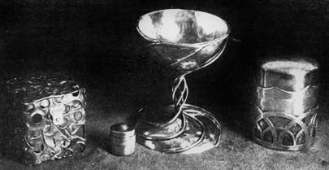

When I was asked to write this article I had grave doubts as to whether I could be of much help to anyone. If considered as a real business, Renaissance is actually very backward and poorly done. In fact, it's the most unbusinesslike and informal shop I've ever seen-including "hip" establishments-and it certainly isn't making us rich. Nor have I any intention of correcting these shortcomings . . . I'm just not into making more money than we need.
We named the shop Renaissance because it is just that-a rebirth, back to using my hands, back to devoting my energies and thoughts to the creation of beautiful things. This change came after a ten year sidetrack which began in the seventh grade when Sputnik was launched, took me to Princeton where I was supposed to major in mathematics (but wound up in philosophy) and ended over Thanksgiving dinner in 1967 at a prep school where I was teaching math and feeling useless and mis-directed.
I see Renaissance as a long term, transitional phase. It's the road I've chosen to getting into the country, painting, making very special silver pieces and following all my other interests . . . surrounded by sunlight and space.
This is a long road because I want to be fully prepared for the end of it. I believe in slow organic growth and in following the natural order. There is something destructive and dis-harmonious about the shock of getting anywhere too fast, whether the vehicle be jet plane, acid, or a too-abrupt change in life style.
This is what I believe. And the reason I put it all down before getting into the meat of the article is to allow you to so the attitudes behind what 1 write, attitudes which clearly are not best suited to the establishment of a permanent, profitable business.
You can see now why I had misgivings about writing this article. But it must be written, because the story of Renaissance is yet another story which can show you the two things which I believe this beautiful magazine is all about. You CAN do it, and it's WORTH IT I hope also to show you HOW.
Perhaps you are now where I was that Thanksgiving: Secure in a well-paying job but not very happy at it . . . with numbness creeping in over the frustration. My wife and I had no capital, not even a savings account. We wanted "out" but we had no idea where we would like to go. On top of that-if I left teaching-I would lose my deferment and force the draft board to rule on my claim of conscientious objection . . . a decision not likely to go in my favor.
It took tremendous courage and much soul searching to say "no" everytime the headmaster urged me to sign a contract for the next school year. The one thought which prodded me into raking the break was this: Of all the forty and fifty year-old men I knew, nearly every one was suffering from the illness known as middle age.
Middle age, as commonly observed in the American male is only the realization that he is really really never never going to do the things he dreamed of in his youth: Never have an exciting job; never spend his vigorous years at what he likes to do, never write that book nor paint the picture that takes twenty years of prep aration. Now it's too late. Now he has responsibilities. And, worst of all, now he is so used to spending forty hours a week in irrelevant activity that he doesn't really care that much any more.
It's tragic to see such men shrug off fifteen years until retirement when they'll try to get down to living . . . but will have forgotten how. Fifteen years is a long time to shrug off and I've heard these men say, "Sometimes I wonder if I should have done thus-and-such with my life".
You see-easy as it is to put off the plunge for one more year while you're young-it gets even easier as you get older. If you're waiting one more year to save another couple thousand dollars, it won't be long before you'll be a rich, listless and callous man of fifty waiting fifteen more years to retirement, wondering if you should have done it when you were twenty-five.
If my venture did fail, I decided, and I had to go back to a conventional career . . . at least when I was fifty I wouldn't be tortured by doubts. I would, at least, have tried. As far as the draft was concerned, I would just have to stand up for my convictions.
Of course the whole thing did work out and it took me an entire year to realize that I wasn't on vacation but was actually earning my living!
Even my claim to conscientious objection was accepted and Cathy, my wife, found she could keep the store open while I worked both there and in a hospital. This arrangement would have been acceptable for the entire two years of my alternative service, but the birth of our son took me entirely out of the draft picture-a nice break but not a necessary one.
The whole point is this: Whatever is hanging you up, whatever little excuses you have for knocking your head against the wall "for just one more year"-be it job security, money, fear, lack of training, even the draft-you CAN do it. You're never too young and you're never too old to make a fresh start. You CAN do it.
You can do it even if you're still a little unfocused about how you'll make it happen. The main reason I'm into silver work today is because that was one of the first classes to become available in the area where I was teaching. Perhaps your plans are a little more specific and you're already proficient in a craft. If so, fine. If not, let me put down some unproven impressions of my own.
There are two kinds of teachers . . . and they're both bad: The first is the man whose primary love is teaching instead of the field in which he instructs. The second is the individual who loves his subject matter . . . but not enough to go out and work at it; a teacher's salary is more important to him than working as he pleases.
A third kind of instructor (whom we won't even consider here) is the man who both works in a field and is employed by an institution to instruct others. He usually is "teaching" only because he's greedy for the extra money and he probably doesn't pay much attention to his students.
It is my personal opinion that you probably will not find a teacher who loves working in silver as much as you do-or should -if you are reading this article seriously. What you're looking for is a man who will teach you technique. By that, I mean the bare minimum of design and a lot about working. Your instructor should sit you down for a short lecture on the use of every tool he introduces, he should make you practice and he should make you do any shabby job over until it is right.
I strongly advise you to seek out the second kind of instructor; the one who is teaching because he doesn't have the courage to make it on his own. He's the best compromise and you'll find him in craft centers and the like.
A void adult education classes held at night in high schools unless you are sure the instructor is not the artsy-craftsy type who only digs teaching. I would also avoid art institutes because instructors there are usually indifferent to teaching. And if they do instruct, they may very well try to teach you a style as well as techniques.
While you're taking lessons, read every book in the library which appears to be useful. And keep a notebook. Take notes in your class, on everything you learn from books and doodle new designs all the time.
Of course you are not going to learn everything about jewelry making before you open your shop, unless you're willing to wait several years . . . which you don't want to do. If you've made three or more pieces which you consider really good-and are confident that you can turn out work of that quality consistently-go ahead. You'll get plenty of practice while stocking your shop for opening day. You can also experiment with ways of finishing pieces in less time.
We started with $1000, no silver, no tools except a set of needle files and one finished piece of jewelry. Within two weeks the car broke down and we found that we owed two months security deposit plus a month's rent in advance on our new apartment. After deducting that, a month's rent on the store and living and moving expenses . . . we had $100 left for the shop. We had hoped the $1000 would last two months.
Cathy got a job which netted exactly enough for the two rents (home and shop). No food, no laundry, no gasoline; just rent. She drove a couple of other girls to work, which paid for gas and, since the shops in our area were staying open late every night, I offered to bring the shopkeepers a hot dinner for $1.50 each evening. Two of them accepted and there was just enough left for us to buy our vegetables (we're vegetarian, thank God) six nights a week. On Sunday we fasted or ate popcorn.
I couldn't believe the indifference with which people tossed around five dollar bills in the supermarket. When I took down one of the walls in the shop I saved and straightened every nail, pulled off the fireboard so as not to break it and used the wood to rebuild the interior and my workbench.
Of course we had no merchandise and no hope of buying silver to make any. But we had to open the store if we were to survive. Fortunately, we had a wire necklace Cathy had made in an adult education class. With her permission I borrowed a drawplate and drew the necklace out as thin as ear wires, then cut and bent it into shapes that could be worn in the ear. These were to become our $3.00 earrings.
I made papier-mache bracelets, pendants, helmets, headdresses and lamps, embedded them with bits of broken mirror and bathroom chain and painted them bright colors. We blew all our eggs and painted them and I covered the walls with my drawings. A month after renting it, we opened the shop: August 1, 1968. By mid-October, Cathy was able to quit her job and we have been supporting ourselves ever since.
It sounds scary as hell but it was really fun. The things to remember are: Make bits and pieces of money any way you can; have somebody-spouse, partner, even you-work while you're putting the shop together; and expect to be poor. If you can possibly avoid it, don't start without tools or materials as we did.
As for saving to finance your venture, that really depends on how long you're willing to wait before breathing free. More important than having a lot of capital is being able to make your assets grow, once you get started. It also does very good things for the head to start from nowhere and get to somewhere.
One more word about money: Don't ever, no matter what, ever go into debt. Don't even borrow a dime for a Coke. I've seen many shopkeepers on our street go into one form of debt or another and there isn't one of them who didn't emerge an unhappier person for it. Being in debt-not being your own man-brings on pressures from without and conflicts from within which can destroy you. Often the one thing which kept us working and kept us happy was that-broke as we were-we never owed anyone a penny.
Choosing a location is a highly personal matter, and the shop you finally select will probably depend more on your personality than on considerations of good business. But don't be too hasty. In our case, we wanted a "hip" area but one that was not yet tourist-laden and commercialized. On the other hand, a hip area may look great at first, but turn out to be only a place where college kids play "dress up".
Every Saturday I'm appalled at how many of the beautiful young people walking up and down the strip are really only snotty know-it-all rich kids on a heavy ego trip. Remember. you'll be seeing these people day after day. The clever remarks they utter for the first time, you'll have heard a hundred times before. Many of them have dabbled in this or that and figure they can do everything you can do. They'll be sure to tell each other so loudly . . . just to put you properly in your place.
T hough it may not seem so, this is an important point and want you to think about it for a moment. Remember that you'll be hearing the same comments once or twice a day, month after month. The area you choose will predetermine the comments. If you pick a hip location, especially in a college area, . you'll be amazed at how intolerant our generation is of people who sell their own work rather than factory-made Mod items. How many times have I smiled to myself at the comment: "It must be nice to have a shop for your own things- if you have the money."
Of course I'm speaking from personal experience and can't really recommend a sure-fire location. But I can tell you this: On the whole, the rich ladies that everyone puts down (Why? Because they're rich?) are more tolerant, more interested, interesting, more pleasant and have better taste than many the young adults who come into my shop. Like the college kids, many of these ladies have taken courses in silver. Unlike the college kids, they recognize that that's not the point and will appreciate your work because you did it as only you can. Think about that.
Naturally you will also want to talk to the owners and clerks of existing shops to find out whether the area you're considering is growing or declining, and whether there will be any interest in a shop such as yours. It might not be a bad idea to stand in front of the location you have in mind and count passers-by over a given period of time. You want the most passers-by per dollar spent for rent. Thus, if one shop has double the traffic of another the same size, but rents for only 25% more, it's the better deal.
Once you're ready to start, find the county auditor's office and buy a vendor's license. If you're doing any renovations, you'll also need a building permit from the Building Department in your city. For simple jobs (like tearing down partitions, etc.) that do not involve electrical work or plumbing, you'll most likely be allowed to do your own work. Once you're finished, an inspector will come and took over the job to check for fire hazards or other violations of the building code. Be nice to the inspector; he's only trying to keep you out of trouble. When your place is approved you'll get a Certificate of Occupancy.
The last bit of red tape we had to go through was a sign permit. as there is a limitation on size and construction. Only the big outfits, with the really ugly eyesores, are granted variances. Try not to be too upset with the strange inconsistencies of your city government. Government is an organic thing and you will find an occasional tumor. Stay happy.
It took me over a year to figure out how per price my work, and I suspect my fumbling around in this area has done more to hurt my business than any other single factor.
Every person who makes objects of beauty and offers them for sale probably has five or six friends who constantly tell him his . prices are too low . . . regardless of how high they are. You must not listen to such people. It is possible to price your work too low but, chances are, you'll notice that these same friends won't be willing to buy your work at the prices they recommend. If they won't buy, why should a perfect stranger?
The first thng you have to do is figure out your costs, excepting materials. How much rent do you pay each hour you're open: ' Add on hourly rates for lights, phone, heat and water if they ::: not included in the rent. What is an hour of your time worth to any average employer in your area? Or, if you intend to hold income to a subsistence level, determine your minimum expenses and calculate how much you must realize per working hour to cover them.
Total your basic wage or per-hour living expenses and the out-of-pocket costs (rent, etc.) of doing business. Add on a small percentage for growth, such as buying new tools and improving the shop. The result is the rate you should charge for your labor when you sell your goods wholesale. Let's see how this charge will be applied to the work you do.
Always make a prototype when starting a new design. This will give you an idea of the most expedient way to properly make the article. It will also help you judge the saleability of the finished piece. If you're not sure it will sell, try it at a price that seems reasonable compared to your other prices. Chances are it won't sell very soon and you won't be making any more.
If you are certain a new piece will sell, set about making a number of them. Say six. For each step in the construction, time yourself and record the time in a notebook. This information will be useful later when you are estimating custom orders. Unless you stop working completely-to wait on a customer, for example-keep the clock running. Changing saw blades, rinsing the pickle from soldered work, washing your hands, etc. are all part of the job.
Now compute the value of your labor per piece and weigh the finished work on a scale to calculate the value of the silver. The weight of the piece times your selling price for silver plus the value of your labor equals the wholesale price of the new design.
But, of course, you are not only a craftsman. You are also a shopkeeper. If you sold your work to a shop they would double your price to cover their expenses. You should do the same. You will find that nearly half your time will be spent talking to customers, sizing rings and keeping books. So, to pay yourself for doing the shopkeeping, you must double the wholesale price. This gives you the final retail price. If you are a fast worker, as I am, it should be quite reasonable-less, in fact, than commercial silver jewelry-though you will inevitably overhear an occasional customer tell her friend, "This stuff is really expensive".
There are two exceptions to the above procedure. First, if you find yourself selling faster than you can produce but you don't want to hire an assistant, you must raise prices until business slows down to a level you can handle . . . unless you want to take all the fun out of it and work yourself to death to get rich.
Second, you should have one-or even a couple-bread and butter lines. These are designs which are fairly easy to make and which consistently sell at prices higher than the price you establish by timing yourself. Choose styles you enjoy making and which sell regularly.
The reason for a bread and butter line is that actually, unless you are a much better businessman than I am (and that's entirely possible), you won't be making as much per hour as you need. Now, of course, you could hold the prices low on these good sellers and spend all your time on them but that would leave no time for experimentation and an occasional super beautiful piece. It would, in other words, allow you no margin for the growth and development of your skill and that is unfair to both you and your customer.
I spend roughly a third of my time making up custom orders. People who wish to have custom work done rarely buy the standard styles, but they keep coming back for special designs and they bring their friends. For this reason it behooves you to do special jobs and-sometimes-even charge less for your time when doing them. Aside from the long run financial gain, we have made some good friends through custom work.
Further, these custom jobs will help you grow and develop as you try new things. If you are careful to accept only those jobs you figure you can do but have never done before, you will learn something with every assignment. Just be sure you can handle it.
By custom work I do not mean repairs. If you have read this far, then I must assume that you are seeking a pleasureable occupation . . . and doing repairs most assuredly does not fall into that category. But it is very easy to get trapped.
People bring in non-sterling jewelry, jewelry they have tried to solder with lead (short of very careful filing, lead is impossible to remove and it permanently clogs files. If left on, lead will eat right through the silver when you heat it), glued pieces are pieces which have been repaired before with soft solder (which will fall apart as you solder the new break and then you will have two repair jobs).
A creative jewelry maker has neither the tools nor the training for repair work and he has no business doing it. If a customer becomes insistent or starts begging-and they often do-emphasize that you are not a jeweler but a silversmith (or any other title of your choosing). This usually works.
Back to custom designs: There are two you should be warned about. First, never never start work until you have taken a deposit of roughly half your estimate. Every single customer from whom I have failed to take a deposit has disappeared and never returned. Every single customer . . . from friends to total strangers.
The second pitfall is one which you can avoid a number of ways (one of which works). This is the selection of a design. Many people will offer you close to total freedom, others will want you to sit down with them and do drawings. Very few will come in with any specific idea of what they want.
I am especially wary of those who offer me freedom to do what I want. After all, if none of my standard designs suited them, what assurance have I that they will like a special design done just for them? My experience has shown that such customers rarely like the special pieces any better than my other work. I've found that a person who offers you total freedom is really a person who has a definite idea way in the back of his head. What he is asking you to do is to come up with that design without making him go to the trouble of fishing it out and communicating it.
The same is true of those who want you to "just sketch some designs" for them. You will very likely spend well over an hour drawing only to have them finally get up and say, "Well, I'll think about it". In customer language, this always means "forget it".
Whenever a customer requests a custom job the first thing I do is tell him to go home and make some sketches. Nothing perfect, just an idea I can refine with him during his next visit. His, next question is "how much will it cost", and I reply that I can't possibly make an estimate until I see his sketches. I spend absolutely the minimum time on this first visit. If the job is something I either cannot or do not wish to do, I tell the customer I am sorry but I do not do that type of work . . . and I refer him elsewhere. He is usually very understanding.
During the second visit-if the customer returns-I go over the designs with him, making whatever practical and artistic suggestions seem appropriate. I make absolutely certain that each of us completely understands every aspect of the design of the finished piece. I then offer an estimate (which is nearly always accepted), take his name, phone number and deposit. We also agree upon the day he will return for the work.
If you wish, of course, you can accept total freedom on a custom job . . . but make sure that you'll be paid for the work-perhaps by charging the entire estimate in advance. And don't be disappointed when your customer doesn't seem very enthusiastic about the finished piece . . . or when he never returns.
You can also sit down on the first visit and draw for a prospective customer, but I strongly advise that if you do you charge him your hourly wholesale rate for the time so spent. Chances are, you'll realize no other financial gain from the session . . . and it won't really be much fun either.
There are exceptions to the policy I recommend. With some customers you can sit down and draw, depending on the job and how well you know the customer. You will learn these exceptions by trial and error. The only rule from which I never deviate is the 50% deposit.
MISCELLANEOUS TIPS
As you get into your shop you will find that some questions are asked over and over again: Do you have peace pendants? Would you make one'? Do you have ankhs? Will you make them? Do you have zodiac symbols? Would you make one?
Peace pendants, ankhs, zodiac symbols and the like have no place in a studio devoted to the creation of new designs. At least not in my opinion. They are also boring to execute and smack of commercialism. To spare myself and my customers the embarrassment of telling them this, I have found that a sign, strategically located and briefly stating my policy does wonders.
I have signs discouraging the comment, "Oh, I could do that," signs discouraging repair work and peace symbols and a chart showing where the money goes for people who complain that the prices are too high. The signs make everyone a little happier and that's what we're after.
Growth is, perhaps, the most important ingredient of success. If every time a person walks into your shop he sees the same old stuff, he will soon stop coming. Try your best to have a new design at least every week so people will learn that it is worth their while to stop in every now and again. If you're in a rut-always making the same old thing and never enjoying the creative end of the art-your store will suffer, your head will suffer and you will lose your happiness and your customers.
The following company is sometimes very slow and seems to have grown to the point where it is indifferent to its customers, but it has the best selection of tools I've found anywhere:
Allcraft Tool & Supply Co., Inc.
215 Park Avenue
Hicksville, New York 11801
Allcraft's catalog costs $1.00 and that dollar is refunded with a purchase of $5.00 or more. You might also wish to order the $1.00 catalog from:
William Dixon, Inc.
Carlstadt, New Jersey 07072
I order all my metals from:
Hoover & Strong, Inc.
119 W. Tupper Street
Buffalo, New York 142101
Hoover & Strong is prompt, reasonable and reliable-the best I've dealt with. The folks there have friendly vibrations. As far as I know they have no minimum.
Now you know everything I know about opening and running a shop for your own work. You know much more than I did when I started. The only obstacle which care possibly, deter you is a lack of courage.
"And if we fail?"s
"We fail! Bart screw your courage to the sticking place and we'll not fail.
|
 Carter Rhys |
|
|